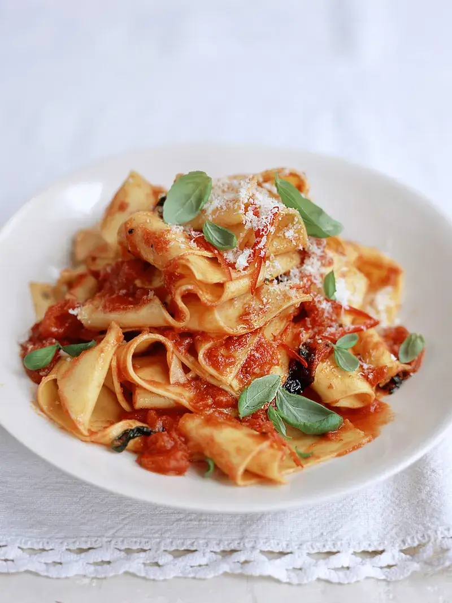

Homemade pappardelle with quick tomato sauce
About this recipe
This tomato sauce may be simple, but boy does it taste special! I love the fresh chill kick.
Ingredients
- extra virgin olive oil
- 2 cloves garlic , peeled and finely sliced
- ½-1 fresh red chilli , halved, deseeded and finely sliced
- 1 small bunch of fresh basil , leaves picked
- 400 g good-quality tinned chopped tomatoes
- sea salt
- freshly ground black pepper
- 250 g fresh lasagne sheets
- Parmesan cheese , freshly grated, to serve
Methodology
- Heat a large frying pan over a medium heat and add a good few lugs of olive oil. When the oil’s hot, add the garlic and chilli and fry until lightly coloured.
- Drop in most of the basil – stand back as it will crackle and spit in the oil – and then, after a few seconds, add the tomatoes. Bring to the boil and simmer for about 5 minutes. You’ll end up with a chunky sauce – if you like it smoother, pass the sauce through a coarse sieve. Taste the sauce and season with salt and pepper. Keep warm.
- Bring a large pan of salted water to the boil. On a lightly floured work surface, cut the lasagne sheets into strips with a knife or a pastry wheel. When the water is at a rolling boil, add the pasta and cook for a few minutes until just al dente.
- Drain the pasta strips in a colander, reserving a little of the cooking water.
- Stir the pasta into the warm sauce. If it’s a bit thick, add a few spoonfuls of the cooking water to loosen it up. Sprinkle with freshly grated Parmesan cheese and the reserved basil leaves and serve immediately.